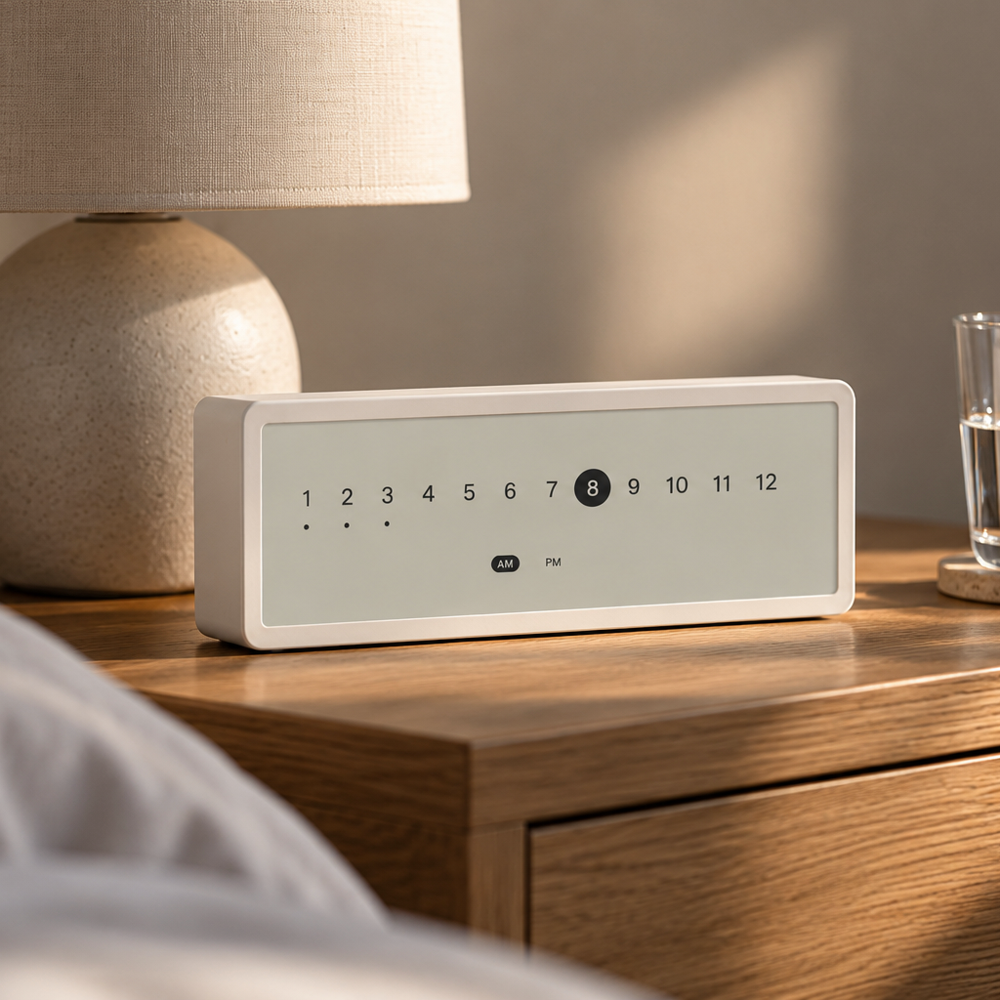

Time, Reimagined.
Meet the Linear Clock — A minimal design piece that introduces a unique way to display the time.
Your time: --:--
Redesigning the rhythm.
In a world that pulses to the beat of instant notifications, algorithmic attention spans, and endless scrolling, we’ve forgotten the gentle rhythm of time.
We’ve become obsessed with the second hand—always chasing, always reacting. But life was never meant to be counted by the tick.


Each day is a journey, not a loop.
Linear is something quieter. Something slower. A clock not for measuring productivity, but for marking presence.
It challenges the tradition of the circular face — the endless loop that traps us in urgency. Instead, we move forward, not around.
How it works
Like a conventional clock, each number represents an hour, and the current hour is highlighted.
The minutes are represented by the dots below the hours, increasing in 5 minute intervals.
Progress, not pressure.
Linear stretches time into a line, like the progress bar on your favorite song, or the quiet arc of sunlight across your wall.
It’s not about getting everything done. It’s about noticing what is being done, one step at a time.


Linear, at a glance.
A paper-like e-ink screen, black-on-white or white-on-black. Sharp in daylight, no glare, no backlight.
Around three months on a charge. E-ink only draws power when the minute changes; top up over USB-C.
A matte, almost seamless casing, sized to stand on a desk and sit quietly next to everything else.
It only tells the time. No app, no Wi-Fi, no account — set it once and leave it be.
Permission, not precision.
Linear is about permission to breathe. To pause. To look away from the screen. To live by your own rhythm.
To be calm and make the most of your day. This is not a clock for schedules. This is a clock for serenity.


